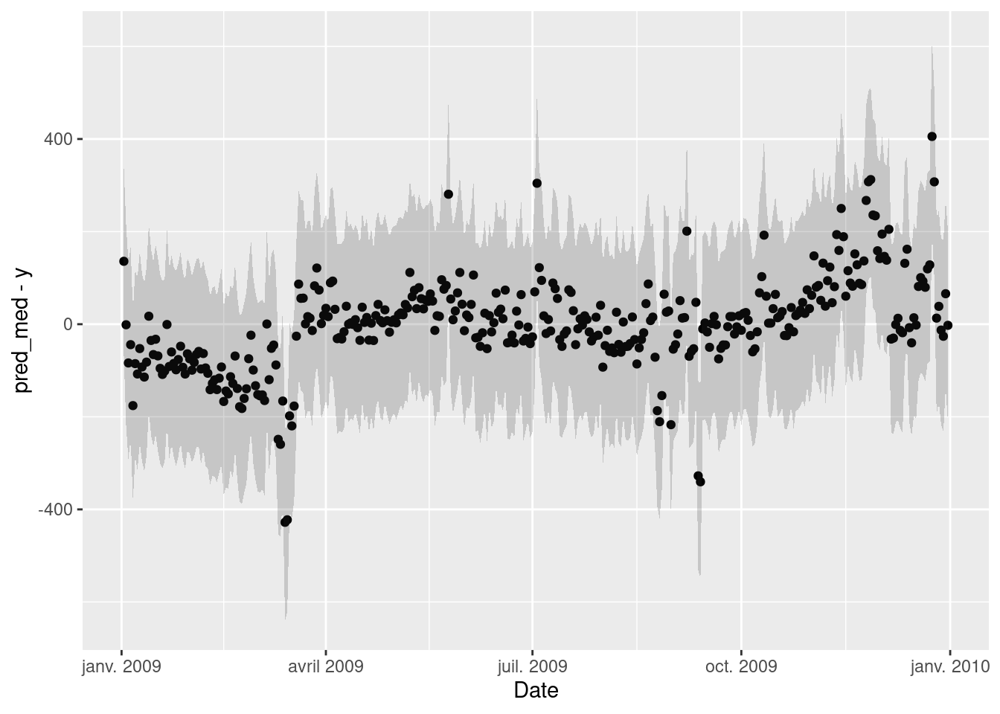
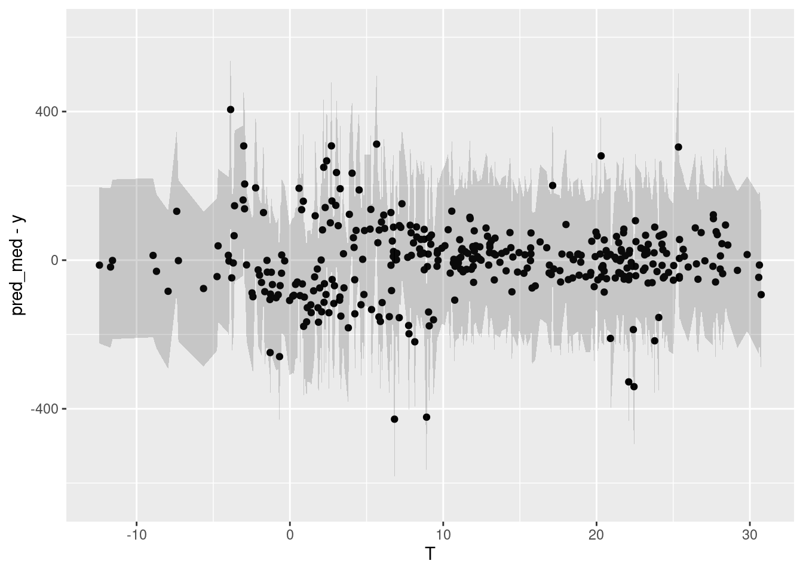
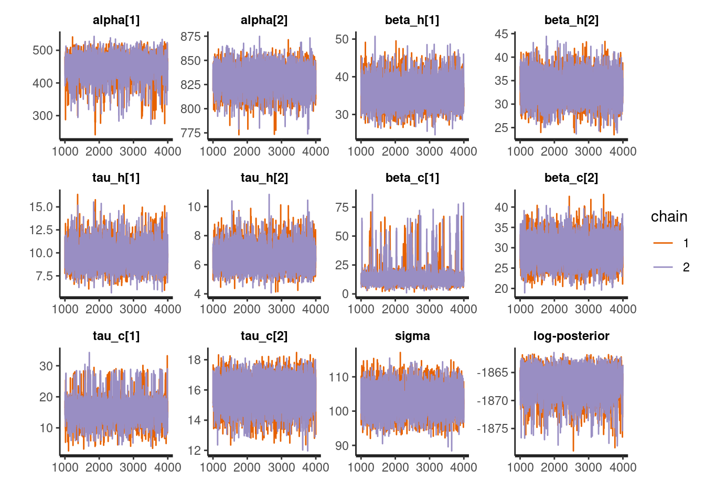
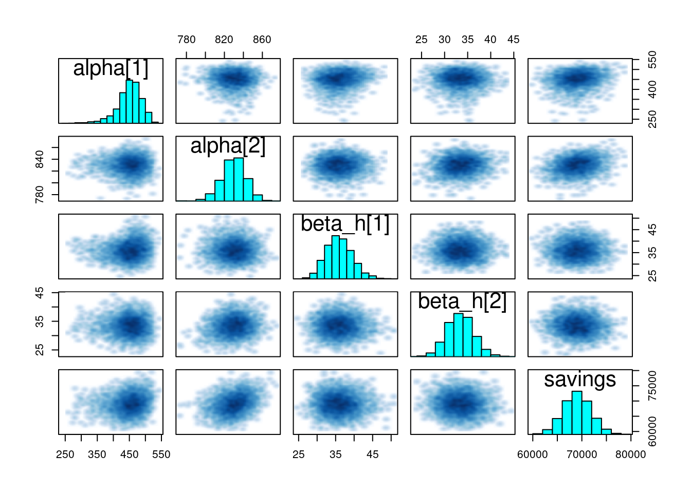
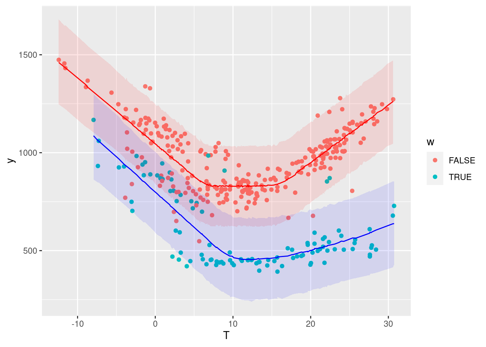
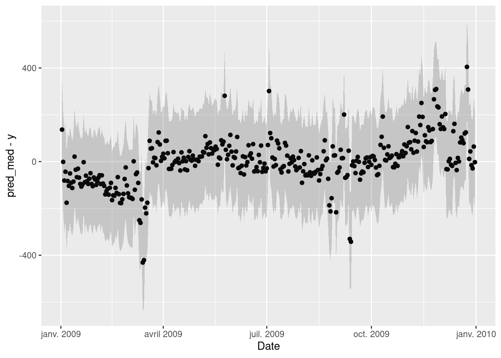
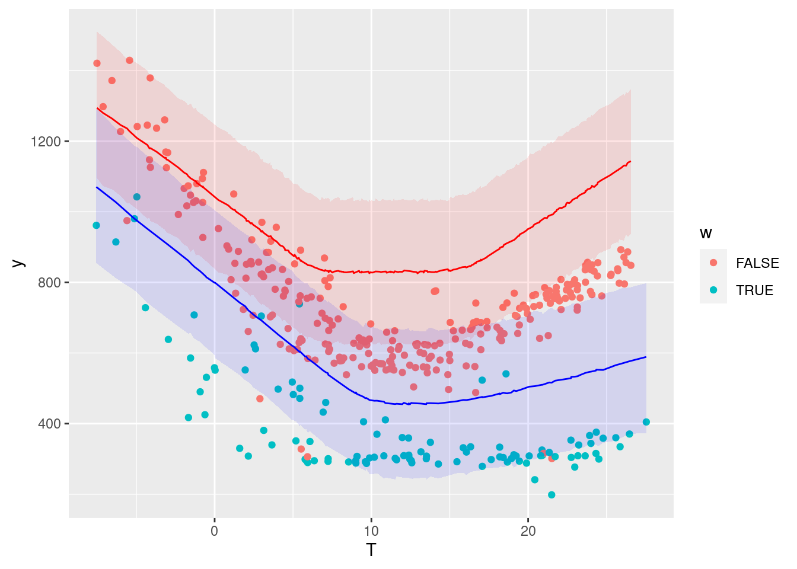
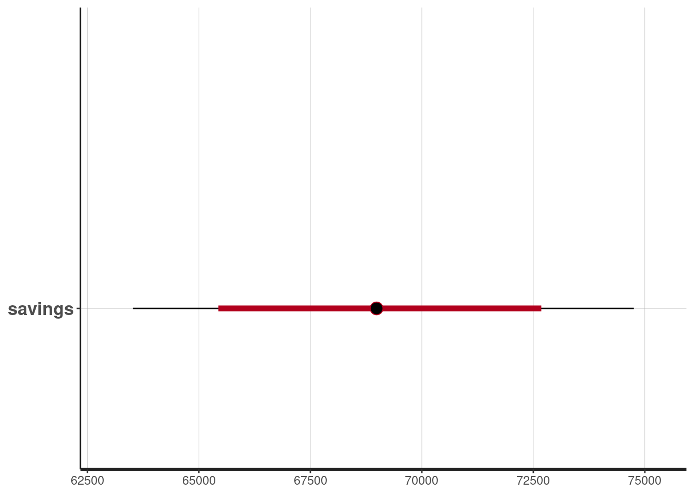

Chapter 5 Bayesian M&V
5.1 A Bayesian workflow for M&V
This tutorial applies the principles of Bayesian data analysis described in Sec. 3.1 to a Measurement and Verification (M&V) problem. In a nutshell, M&V aims at reliably assessing the energy savings that were actually gained from energy conservation measures (ECM). One of the main M&V workflows, formalised by the IPMVP, is the “reporting period basis”, or “avoided consumption” method:
- a numerical model is trained during a baseline observation period (before ECMs are applied);
- the trained model is used to predict energy consumption during the reporting period (after energy conservation measures);
- predictions are compared with the measured consumption of the reporting period, in order to estimate adjusted energy savings
This method therefore requires data to be recorded before and after implementation of the ECM, for a sufficiently long time. Fig. 5.1 shows the main steps of this method, when following a Bayesian approach. We assume that the measurement boundaries have been defined and that data have been recorded during the baseline and reporting period respectively.
Figure 5.1: Estimation of savings with uncertainty in an avoided consumption workflow. The step of model validation is not displayed
- As with standard approaches, choose a model structure to describe the data with, and formulate it as a likelihood function. Formulate eventual “expert knowledge” assumptions in the form of prior probability distributions.
- Run a MCMC (or other) algorithm to obtain a set of samples \(\left(\theta^{(1)},...,\theta^{(S)}\right)\) which approximates the posterior distribution of parameters conditioned on the baseline data \(p(\theta|y_\mathit{base})\). Validate the inference by checking convergence diagnostics: \(\hat{R}\), ESS, etc.
- Validate the model by computing its predictions during the baseline period \(p(\tilde{y}_\mathit{base}|y_\mathit{base})\). This can be done by taking all (or a representative set of) samples individually, and running a model simulation \(\tilde{y}_\mathit{base}^{(s)} \sim p(y_\mathit{base}|\theta=\theta^{(s)})\) for each. This set of simulations generates the posterior predictive distribution of the baseline period, from which any statistic can be derived (mean, median, prediction intervals for any quantile, etc.). The measures of model validation (\(R^2\), net determination bias, t-statistic…) can then be computed either from the mean, or from all samples in order to obtain their own probability densities.
- Compute the reporting period predictions in the same discrete way: each sample \(\theta^{(s)}\) generates a profile \(\tilde{y}_\mathit{repo}^{(s)} \sim p(y_\mathit{repo}|\theta=\theta^{(s)})\), and this set of simulations generates the posterior predictive distribution of the reporting period.
- Since each reporting period prediction \(\tilde{y}_\mathit{repo}^{(s)}\) can be compared with the measured reporting period consumption \(y_\mathit{repo}\), we can obtain \(S\) values for the energy savings, which distribution approximate the posterior probability of savings.
5.2 Change-point models
Some systems are dependent on a variable, but only above or below a certain value. For example, cooling energy use may be proportional to ambient temperature, yet only above a certain threshold. When ambient temperature decreases to below the threshold, the cooling energy use does not continue to decrease, because the fan energy remains constant. In cases like these, simple regression can be improved by using a change-point linear regression. Change point models often have a better fit than a simple regression, especially when modeling energy usage for a facility.
The energy signature of a building decomposes the total energy consumption (or power \(\Phi\)) into three terms: heating, cooling, and other uses. Heating and cooling are then assumed to be linearly dependent on the outdoor air temperature \(T_e\), and only turned on conditionally on two threshold temperatures \(T_{b1}\) and \(T_{b2}\), respectively. \[\begin{align} E(\Phi|\theta, X) & = \Phi_0 + \mathrm{HTC}_1 \, \left(T_{b1} - T_e\right) & \mathrm{if} \quad T_e \leq T_{b1} \tag{5.1} \\ E(\Phi|\theta, X) & = \Phi_0 & \mathrm{if} \quad T_{b1} \leq T_e \leq T_{b2} \tag{5.2} \\ E(\Phi|\theta, X) & = \Phi_0 + \mathrm{HTC}_2 \, \left(T_e - T_{b2}\right) & \mathrm{if} \quad T_{b2} \leq T_e \tag{5.3} \end{align}\] Data points should be averaged over long enough (at least daily) sampling times, so that the steady-state assumption formulated above can hold. \(\Phi_0\) is the average baseline consumption during each sampling period, of all energy uses besides heating and cooling. Heating is turned on if the outdoor air temperature drops below a basis temperature \(T_{b1}\), and the heating power \(\Phi_h = \mathrm{HTC}_1 \, \left(T_{b1} - T_e\right)\) is assumed proportional to a heat transfer coefficeint (HTC) value. The same reasoning is used to formulate cooling, with a “summer HTC” value that may be different from the first one. This model is therefore a piecewise linear regression model, where the switching points \(T_{b1}\) and \(T_{b2}\) are usually to be identified along with the other parameters.
The appeal of the energy signature model is that the only data it requires are energy meter readings and outdoor air temperature, with a large sampling time.
5.3 IPMVP option C example
The data used in this example is the hourly energy consumption and outdoor air temperature data for 11 commercial buildings (office/retail), publicly available here:
https://openei.org/datasets/dataset/consumption-outdoor-air-temperature-11-commercial-buildings
We will be using two data files, respectively labeled Building 6 (Office “Pre”), and Building 6 (Office “Post”).
5.3.1 Loading and displaying the data
The following block loads two separate data files:
building60preoffice.csvis the baseline period file, saved into the df.base variablebuilding60postoffice.csvis the reporting period file, saved into the df.repo variable
The Date column of both files is converted into a DateTime type into a new column. Then, the baseline dataset is displayed for a first exploratory look at the data.
# Baseline data: one year
df.base <- read_csv("data/building60preoffice.csv") %>%
mutate(DateTime = mdy_hm(Date),
Date = as_date(DateTime))
# Post-retrofit data: one year
df.repo <- read_csv("data/building62postoffice.csv") %>%
mutate(DateTime = mdy_hm(Date),
Date = as_date(DateTime))
# Plot the original data
head(df.base)## # A tibble: 6 x 4
## Date OAT `Building 6 kW` DateTime
## <date> <dbl> <dbl> <dttm>
## 1 2009-01-02 41.6 23.3 2009-01-02 00:00:00
## 2 2009-01-02 40.9 23.1 2009-01-02 01:00:00
## 3 2009-01-02 39.5 23.7 2009-01-02 02:00:00
## 4 2009-01-02 36.3 29.1 2009-01-02 03:00:00
## 5 2009-01-02 32.8 35.6 2009-01-02 04:00:00
## 6 2009-01-02 32.5 45.5 2009-01-02 05:00:00
A few interesting observations:
- The data has a hourly time step size. Every hour, the outdoor air temperature (OAT in °F) and energy use (kW) are available.
- The energy use is higher in summer and in winter than in-between. This suggests that this consumption data includes both heating and cooling appliances.
- Week-ends are clearly visible with a lower consumption than in the working days of the week.
5.3.2 Daily averaged data
Averaging the data over daily time steps should allow to overlook the dependence between consecutive measurements. In turn, this allows using a model which will be much simpler than time series models, but will only be capable of low frequency predictions.
The following block creates new datasets from the original ones:
- Measurements are daily averaged
- Temperatures are switched to °C for international suitability.
- A categorical variable is added to indicate week ends.
Then, we plot the daily energy use \(E\) (kWh) versus the outdoor temperature \(T\) (°C) for both values of the week.end categorical variable.
daily.average <- function(df) {
df %>%
group_by(Date) %>%
summarise(OAT = mean(OAT),
E = sum(`Building 6 kW`),
.groups = 'drop'
) %>%
mutate(wday = wday(Date),
week.end = wday==1 | wday==7,
T = (OAT-32) * 5/9)
}
df.base.daily <- daily.average(df.base)
df.repo.daily <- daily.average(df.repo)
ggplot(data = df.base.daily) +
geom_point(mapping = aes(x=T, y=E, color=week.end))
5.3.3 Model definition
After looking at the data, we can suggest using a change-point model which will include the effects of heating and cooling, and separate week ends from working days. The expected daily energy use \(E\) (in kWh per day) is a function of the outdoor temperature \(T\) and of a number of parameters:
- For the week-ends: \(p(E|T) \sim \mathcal{N}\left[\alpha_1 + \beta_{1,h}(\tau_{1,h}-T)^+ + \beta_{1,c}(T-\tau_{1,c})^+, \sigma\right]\)
- For the working days: \(p(E|T) \sim \mathcal{N}\left[\alpha_2 + \beta_{2,h}(\tau_{2,h}-T)^+ + \beta_{2,c}(T-\tau_{2,c})^+,\sigma\right]\)
Where the 1 and 2 subscripts indicate week-ends and working day, respectively, and the \(h\) and \(c\) subscripts indicate heating and cooling modes. The \(+\) superscript indicates that a term is only applied if above zero.
The two equations above mean that we expect the energy use \(E\) to be a normal distribution centered around a change-point model, with a constant standard deviation \(\sigma\). Some particularities of Bayesian statistics are: this normal distribution can be replaced by any other probability distribution; the error term \(\sigma\) can be formulated as a function of some inputs; etc.
This model has 11 possible parameters, which makes it significantly more complex than an ordinary linear regression. We could simplify it by assuming that the “working days” and “week ends” mode share the same temperature thresholds for heating (\(\tau_{1,h}=\tau_{2,h}\)) or for cooling (\(\tau_{1,c}=\tau_{2,c}\)). The following method would also be exactly the same if we decided to complexify the model, for instance by assuming non-linear profiles on each side of the change points, or if we had more categorical variables.
5.3.4 Model specification with Stan
In this example, we use the Stan probabilistic programming language, which allows full Bayesian statistical inference.
A Stan model is a block of text which can either be written in a separate file, or in the same script as the current code. Specifying a model in Stan takes a certain learning curve, but it unlocks the full flexibility of Bayesian analysis.
changepoint <- "
functions {
// This chunk is the formula for the changepoint model which will be used several times in this program
real power_mean(int w, real t, vector alpha, vector beta_h, vector tau_h, vector beta_c, vector tau_c) {
real a = w ? alpha[1] : alpha[2]; // condition on the type of day
real heat = w ? beta_h[1] * fmax(tau_h[1]-t, 0) : beta_h[2] * fmax(tau_h[2]-t, 0) ;
real cool = w ? beta_c[1] * fmax(t-tau_c[1], 0) : beta_c[2] * fmax(t-tau_c[2], 0) ;
return (a + heat + cool);
}
}
data {
// This block declares all data which will be passed to the Stan model.
int<lower=0> N_base; // number of data items in the baseline period
vector[N_base] t_base; // temperature (baseline)
int w_base[N_base]; // categorical variable for the week ends (baseline)
vector[N_base] y_base; // outcome energy vector (baseline)
int<lower=0> N_repo; // number of data items in the reporting period
vector[N_repo] t_repo; // temperature (reporting)
int w_repo[N_repo]; // categorical variable for the week ends (reporting)
vector[N_repo] y_repo; // outcome energy vector (reporting)
}
parameters {
// This block declares the parameters of the model. There are 10 parameters plus the error scale sigma
vector[2] alpha; // baseline consumption (work days and week ends)
vector[2] beta_h; // slopes for heating
vector[2] tau_h; // threshold temperatures for heating
vector[2] beta_c; // slopes for cooling
vector[2] tau_c; // threshold temperatures for cooling
real<lower=0> sigma; // error scale
}
model {
// Assigning prior distributions on some parameters
alpha ~ normal([400, 800], [150, 150]);
tau_h ~ normal(8, 5);
tau_c ~ normal(18, 5);
beta_h ~ normal(40, 15);
beta_c ~ normal(40, 15);
// Observational model
for (n in 1:N_base) {
y_base[n] ~ normal(power_mean(w_base[n], t_base[n], alpha, beta_h, tau_h, beta_c, tau_c), sigma);
}
}
generated quantities {
vector[N_base] y_base_pred;
vector[N_repo] y_repo_pred;
real savings = 0;
for (n in 1:N_base) {
y_base_pred[n] = normal_rng(power_mean(w_base[n], t_base[n], alpha, beta_h, tau_h, beta_c, tau_c), sigma);
}
for (n in 1:N_repo) {
y_repo_pred[n] = normal_rng(power_mean(w_repo[n], t_repo[n], alpha, beta_h, tau_h, beta_c, tau_c), sigma);
savings += y_repo_pred[n] - y_repo[n];
}
}
"Then, a list called model_data is created, which maps each part of the data to its appropriate variable into the Stan model.
5.3.5 Model fitting
Now that the model has been specified and the data has been mapped to its variables, the syntax for model fitting is below.
One disadvantage of Bayesian inference is that the MCMC algorithm takes much longer to converge than a typical least-squares model fitting method. Running the code below might take a minute because we are only using 365 data points, but the Bayesian approach might become problematic for larger data files.
# Fitting the model
fit1 <- stan(
model_code = changepoint, # Stan program
data = model_data, # named list of data
chains = 2, # number of Markov chains
warmup = 1000, # number of warmup iterations per chain
iter = 4000, # total number of iterations per chain
cores = 2, # number of cores (could use one per chain)
refresh = 0, # progress not shown
)Fitting may result in a number of warnings, telling us that some problems may have occurred: divergent transitions, large R-hat values, low Effective Sample Size… Obtaining a fit without these warnings takes some practice but is essential for an unbiased interpretation of the inferred variables and predictions. A guide to Stan’s warnings and how to address them is available here.
The first step into solving these warnings is to re-run the algorithm with different controls: iter, max_treedepth, etc. If problems persist, it is possible that the model is too complex for the information that the data is able to provide and should be simplified, or that stronger priors should be proposed. A lot of problems can be solved with some prior information. In our specific case, this is especially useful for the variables in the equation for the week-ends, since there are not a lot of data points.
5.3.6 Validation and results
Stan returns an object (called fit1 above) from which the distributions of outputs and parameters of the fitted model can be accessed
The MCMC algorithm produces a chain of samples \(\theta^{(m)}\) for the parameters, which approximate their posterior distributions. In this case, each parameter of the model is represented by a chain of 6,000 draws: from these draws, we can extract any statistics we need: mean, median, quantiles, \(t\)-score and \(p\)-values, etc.
5.3.6.1 Parameters
As a first validation step, it is useful to take a look at the values of the parameters that have been estimated by the algorithm. Below, we use three diagnostics tools:
- The
printmethod shows the table of parameters, much like we could display after an ordinary linear regression traceplotshows the traces of the selected parameters. If the fitting has converged, the traces approximate the posterior distributionspairsshows the pairwise relationships between parameters. Strong interactions between some parameters are an indication that the model should be re-parameterised.
## Inference for Stan model: 2f8fdf9f22a34576398be759917c5a83.
## 2 chains, each with iter=4000; warmup=1000; thin=1;
## post-warmup draws per chain=3000, total post-warmup draws=6000.
##
## mean se_mean sd 2.5% 25% 50% 75% 97.5%
## alpha[1] 449.74 1.18 38.28 355.20 430.61 453.91 475.32 510.64
## alpha[2] 829.74 0.18 12.60 803.82 821.68 830.16 838.36 853.06
## beta_h[1] 35.96 0.05 3.55 29.60 33.48 35.79 38.28 43.42
## beta_h[2] 33.40 0.04 2.89 27.92 31.42 33.38 35.33 39.12
## tau_h[1] 9.80 0.04 1.46 7.31 8.71 9.76 10.68 13.07
## tau_h[2] 6.51 0.01 0.81 5.17 5.94 6.43 7.01 8.31
## beta_c[1] 15.15 0.43 9.65 6.14 10.34 12.76 15.86 48.33
## beta_c[2] 29.33 0.05 3.29 23.16 27.08 29.26 31.56 35.88
## tau_c[1] 16.27 0.18 4.60 7.88 13.62 15.93 18.19 27.39
## tau_c[2] 15.81 0.02 1.01 13.64 15.17 15.90 16.55 17.52
## sigma 103.13 0.05 3.95 95.52 100.38 103.02 105.76 111.14
## savings 69041.42 38.22 2824.53 63524.08 67144.95 68986.43 70889.69 74753.67
## n_eff Rhat
## alpha[1] 1050 1
## alpha[2] 5091 1
## beta_h[1] 4450 1
## beta_h[2] 5214 1
## tau_h[1] 1267 1
## tau_h[2] 4253 1
## beta_c[1] 496 1
## beta_c[2] 4665 1
## tau_c[1] 638 1
## tau_c[2] 4080 1
## sigma 5834 1
## savings 5462 1
##
## Samples were drawn using NUTS(diag_e) at Fri Aug 27 15:49:26 2021.
## For each parameter, n_eff is a crude measure of effective sample size,
## and Rhat is the potential scale reduction factor on split chains (at
## convergence, Rhat=1).

5.3.6.2 Predictions
Our main goal here is to compare the energy use measured during the reporting period \(y_\mathit{repo}\) with the predictions of the fitted model. Since it is a probabilistic model, its outcome is actually a probability distribution \(p\left(y_\mathit{repo}|x_\mathit{repo}, x_\mathit{base}, y_\mathit{base}\right)\), based on the observed values of the model inputs \(x\) during the baseline and reporting periods, and on the observed energy use during the baseline period \(y_\mathit{base}\).
This so-called posterior predictive distribution \(p\left(y_\mathit{repo}|...\right)\) is already directly available, because a value of \(y_\mathit{repo}\) (for each time step) was directly calculated by the Stan model for each value \(\theta^{(m)}\) (see Stan user’s guide for more details).
\[\begin{equation} p\left(y_\mathit{repo}|...\right) \approx \frac{1}{M} \sum_{m=1}^M p\left(y_\mathit{repo}|x_\mathit{repo},\theta^{(m)}\right) \end{equation}\]
First, let us look at the posterior predictive distribution during the baseline period, in order to validate the model compared to its training data:
# Extracting full predictive distributions from the stanfit object
la <- rstan::extract(fit1, permuted = TRUE)
y_base_pred <- la$y_base_pred
# Quantiles
y_base_quan <- apply(y_base_pred, 2, quantile, probs=c(0.025, 0.5, 0.975))
# Data frame
df.base.post <- data.frame(Date = df.base.daily$Date, T = df.base.daily$T, y = df.base.daily$E, w = df.base.daily$week.end,
pred_low = y_base_quan[1, ], pred_med = y_base_quan[2, ], pred_up = y_base_quan[3, ])
# Plot
ggplot(data = df.base.post) +
geom_point(mapping = aes(x=T, y=y, color=w)) +
geom_line(data = . %>% filter(!df.base.post$w), mapping = aes(x=T, y=pred_med), color='red') +
geom_ribbon(data = . %>% filter(!df.base.post$w), mapping = aes(x=T, ymin=pred_low, ymax=pred_up), fill='red', alpha=0.1) +
geom_line(data = . %>% filter(df.base.post$w), mapping = aes(x=T, y=pred_med), color='blue') +
geom_ribbon(data = . %>% filter(df.base.post$w), mapping = aes(x=T, ymin=pred_low, ymax=pred_up), fill='blue', alpha=0.1)
The colored bands show a 95% prediction interval for the working days and the week ends, respectively. The points are the measurements of the baseline period.
5.3.7 Residuals
An important validation step is to check for autocorrelation in the residuals of the fitted model, on the baseline data that was used for fitting. Autocorrelation is often a sign of insufficient model complexity, or that the form of the model error term has not been appropriately chosen.
The two graphs below show:
- Residuals vs Date, in order to display eventual autocorrelation
- residuals vs Temperature
ggplot(data = df.base.post) +
geom_point(mapping = aes(x=Date, y=pred_med-y)) +
geom_ribbon(mapping = aes(x=Date, ymin=pred_low-y, ymax=pred_up-y), alpha=0.2)
ggplot(data = df.base.post) +
geom_point(mapping = aes(x=T, y=pred_med-y)) +
geom_ribbon(mapping = aes(x=T, ymin=pred_low-y, ymax=pred_up-y), alpha=0.2)The second graph is fine, but it seems that these is a trend in the residuals in the first few months and last few months of the year, suggesting that the model doesn’t quite capture the winter energy consumption very well.
5.3.8 Savings
Our Stan model already calculates the expected output \(y\) of the reporting period, for each sample \(\theta_i\) of the posterior distribution. We can therefore display a probability distribution for each of the data points of the reporting period, and compare it with the measured data in the same period.
The following graph compares the energy use measured during the reporting period (points) with the probability distributions of energy use predicted by the model during the same period.
# Extracting full predictive distributions from the stanfit object
y_repo_pred <- la$y_repo_pred
# Quantiles
y_repo_quan <- apply(y_repo_pred, 2, quantile, probs=c(0.025, 0.5, 0.975))
# Data frame
df.repo.post <- data.frame(Date = df.repo.daily$Date, T = df.repo.daily$T, y = df.repo.daily$E, w = df.repo.daily$week.end,
pred_low = y_repo_quan[1, ], pred_med = y_repo_quan[2, ], pred_up = y_repo_quan[3, ])
# Plot
ggplot(data = df.repo.post) +
geom_point(mapping = aes(x=T, y=y, color=w)) +
geom_line(data = . %>% filter(!df.repo.post$w), mapping = aes(x=T, y=pred_med), color='red') +
geom_ribbon(data = . %>% filter(!df.repo.post$w), mapping = aes(x=T, ymin=pred_low, ymax=pred_up), fill='red', alpha=0.1) +
geom_line(data = . %>% filter(df.repo.post$w), mapping = aes(x=T, y=pred_med), color='blue') +
geom_ribbon(data = . %>% filter(df.repo.post$w), mapping = aes(x=T, ymin=pred_low, ymax=pred_up), fill='blue', alpha=0.1)
The savings, i.e. the difference between the measured energy use during the reporting period and their prediction by the model, have been included in the Stan model definition. Similarly to the prediction, the savings are therefore available as a probability distribution: we have a full description of any confidence interval we may wish for.
The table of results shown after model fitting shows that
- The mean estimated savings are 69,069 kWh
- The 95% confidence interval spans between 63,550 and 74,880 kWh
We can also choose to display any quantile of the posterior distribution of savings:
## ci_level: 0.8 (80% intervals)## outer_level: 0.95 (95% intervals)